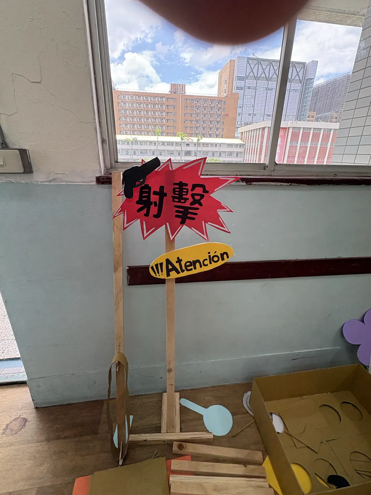
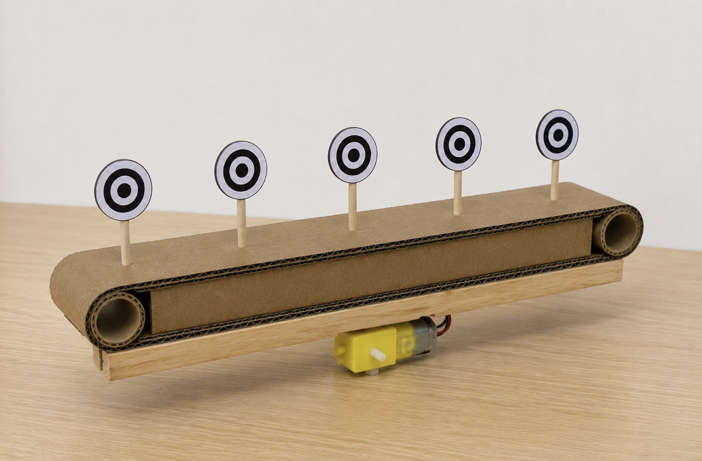
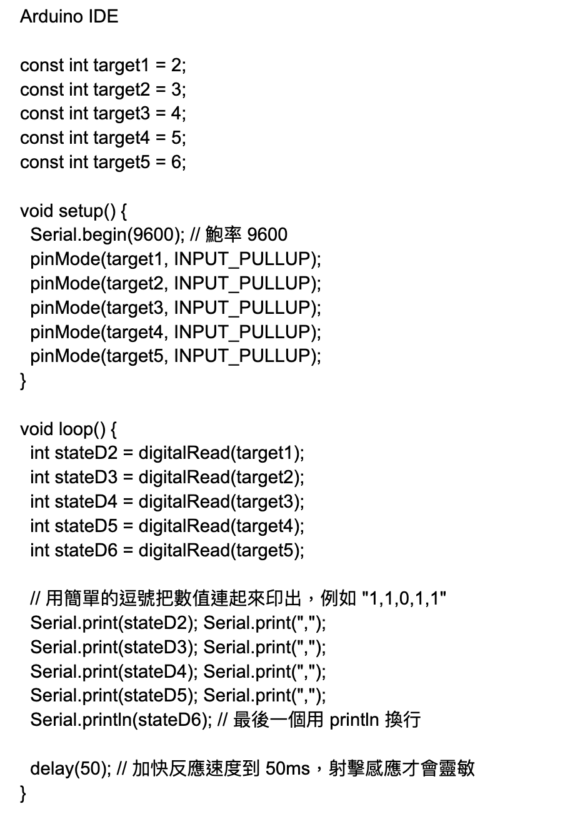
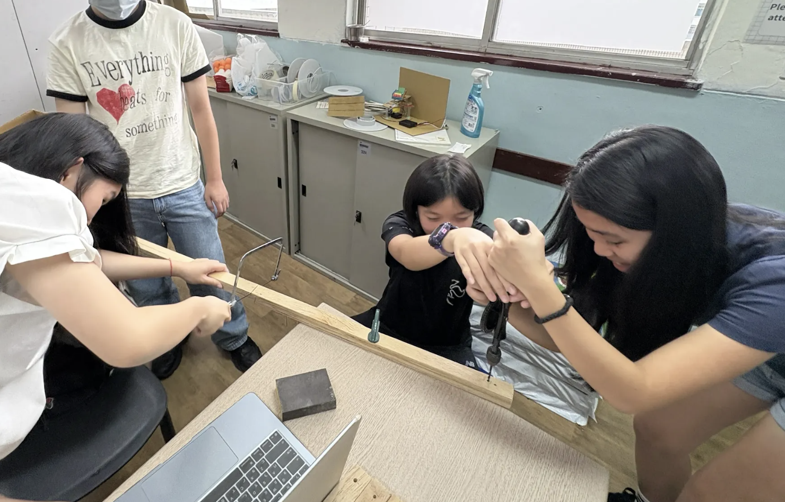
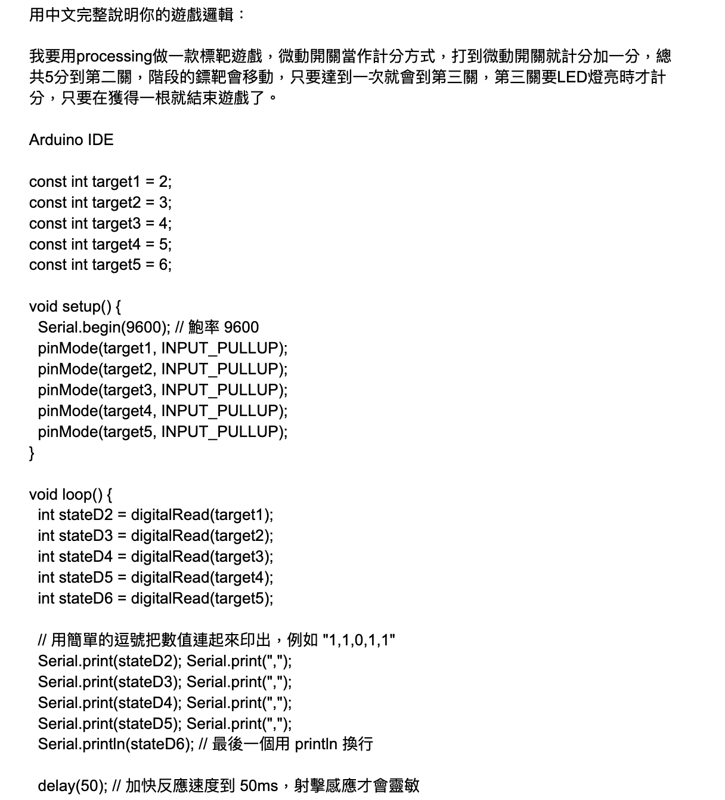
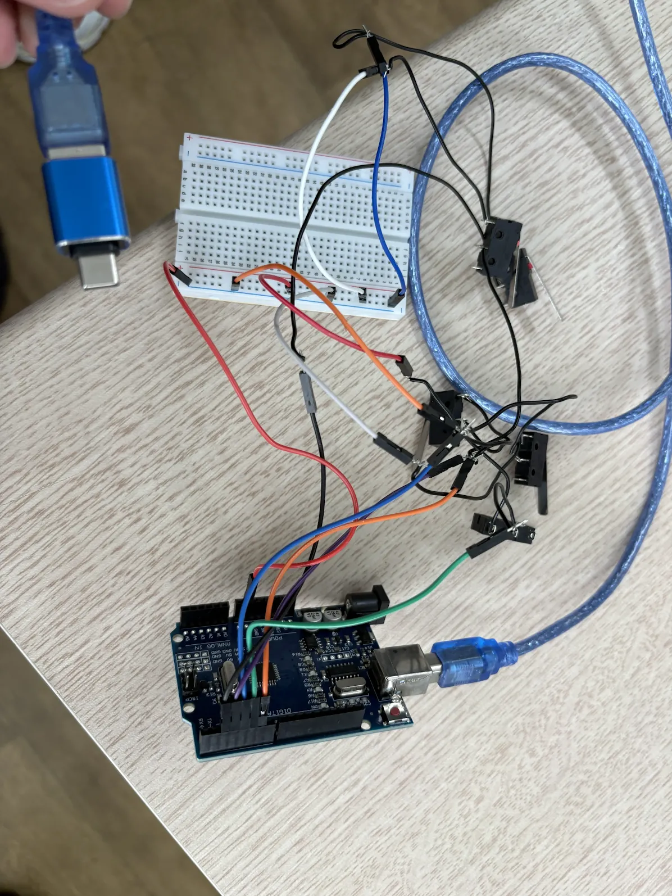
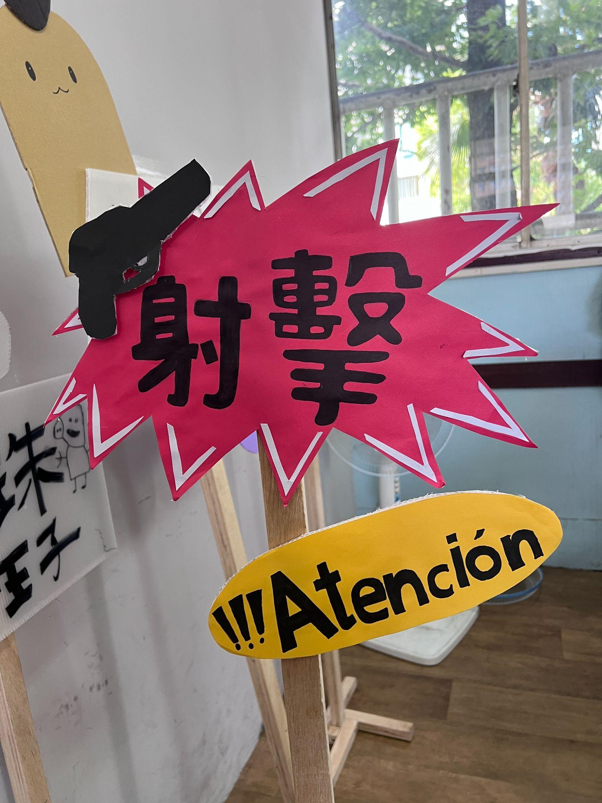
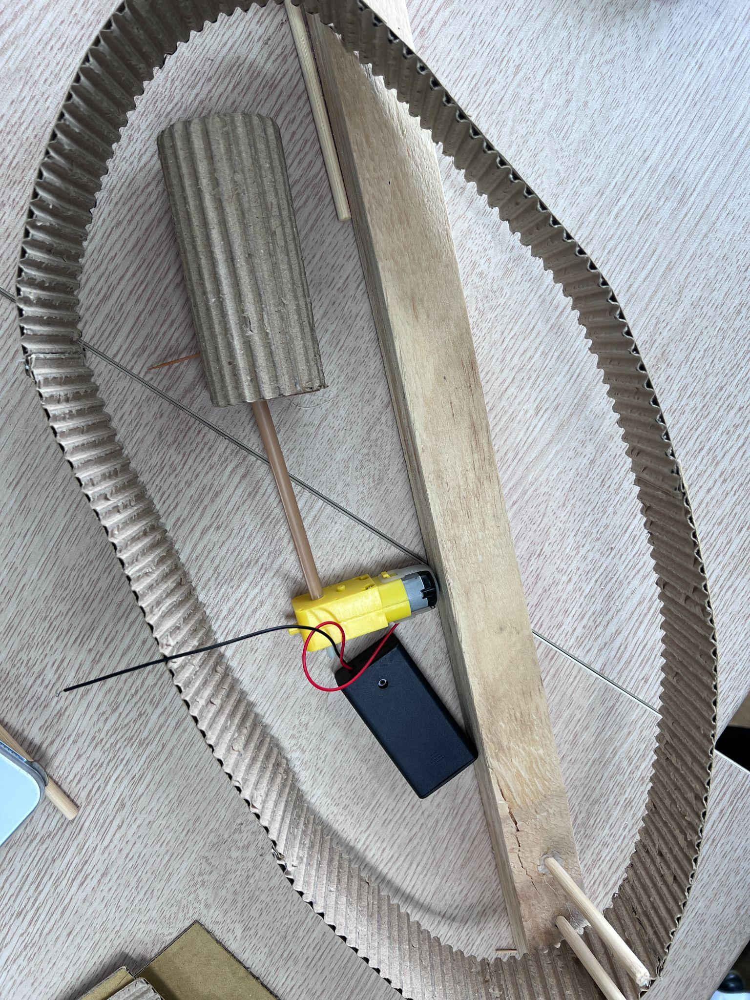
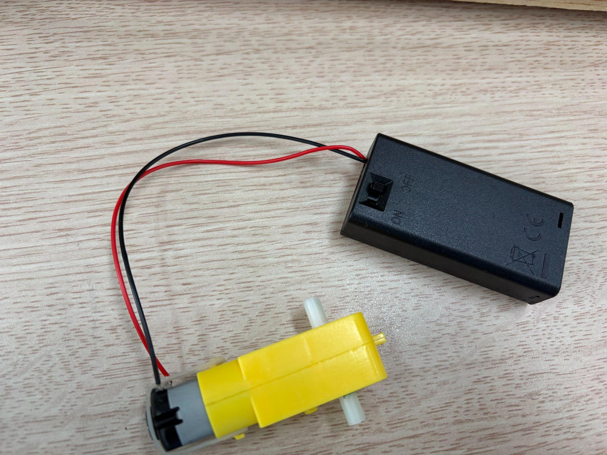

D組
組員：周以潔、林為樂、張宥淇、周昀希｜組長：周以潔
「靜止的標靶太無聊，會移動的才夠刺激！？那就來征服會移動的挑戰！全方位的動態標靶，只留給真正的神射手。」
（同時透過橡皮筋槍的方式，讓大家重回童年回憶當中。）
射擊遊戲遊玩機制：
。標靶會一直往同一個方向移動
。每個玩家擁有8個橡皮筋槍
。每射到一個標靶分數會往上增加兩分
勝利條件：
。射到五個標靶，也就是得到10分
實體內容原理：我們透過履帶的原理讓標靶可以固定在履帶上一直持續往一個方向移動。
程式內容原理：當橡皮筋彈到標靶上時，微動開關會立即被按下，同時分數會加入到電腦中的計分板上。
未來預計製作內容：
預計開學前（放假月製作）：
。3D建模：正在等待列印中
。履帶製作：讓馬達運作穩定（問題點：履帶是否能支撐標靶的重量？）
。木工：木架製作
預計開學後完成（預計需要一週半的時間）：
。微動開關安裝到標靶：
。挑整所有問題




周以潔：3D建模、招牌製作、履帶製作（履帶本身、馬達）


我負責寫程式小組分工
周以潔（次要）、林為樂：程式
周昀希、張宥淇、周以潔（主要）林為樂（次要）：實體製作


張宥淇：招牌製作、履帶製作

周昀希：附帶製作（馬達）、招牌製作